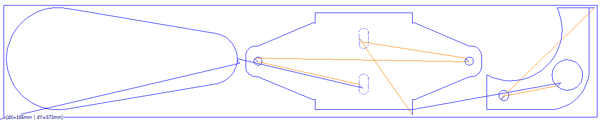

多零件示例程序
以下程序设计了 3 个不同的零件，其中某些轮廓包含标记定义等，供参考：

%1 (PP_Sample_Pgm.DIN)
Sheet_Size_X = 120
Sheet_Size_Y = 600
Job_Size_X = 105
Job_Size_Y = 573
X_Limit_Minus = 10
X_Limit_Plus = 115
Y_Limit_Minus = 10
Y_Limit_Plus = 583
G90
M15
G17 D=SheetRotation
G253 F="TT:MS_1mm"
H0
CheckBoundPrg
G20 X1
BlockNo=1
M01 (start part 1)
PM=20.000 CM=100.000
EM=1.000 ZRH=20
Update_Param
G61
Lead_In=4.999
G41 R=KERF E0
G0 X55.798 Y237.995
M14
G3 X60.005 Y235.697 I4.207 J2.702
G2 X84.655 Y214.863 I0 J-25
G1 X109.306 Y69.03
G2 X10.704 Y69.03 I-49.301 J-8.333
G1 X35.355 Y214.863
G2 X60.005 Y235.697 I24.65 J-4.167
M15
G40 E1
G20 X2
N2
BlockNo=2
M01 (start part 2)
PM=20.000 CM=300.000
EM=1.000 ZRH=20
Update_Param
G61
Lead_In=5.0
G41 R=KERF E0
G0 X31.469 Y358.031
M14
{LB,K0} (Dash line for Marking in HMI)
G1 X35.005 Y354.495
G1 X40.505 Y354.495
G3 X40.505 Y363.495 I0 J4.5
G1 X29.505 Y363.495
G3 X29.505 Y354.495 I0 J-4.5
G1 X35.005 Y354.495
{LE} (End Dash line)
G40 E1
G20 X3
N3
BlockNo=3
PM=20.000 CM=100.000
EM=1.000 ZRH=20
Update_Param
G61
Lead_In=4.374
G41 R=KERF E0
G0 X57.018 Y255.5
M14
G1 X59.395 Y253.163
G3 X60.333 Y253.167 I0.467 J0.475
G3 I-2.828 J2.828
M15
G40 E1
G20 X4
BlockNo=4
PM=20.000 CM=100.000
EM=1.000 ZRH=20
Update_Param
G61
Lead_In=4.374
G41 R=KERF E0
G0 X57.018 Y461.5
M14
G1 X59.395 Y459.163
G3 X60.333 Y459.167 I0.467 J0.475
G3 I-2.828 J2.828
M15
G40 E1
G20 X5
N5
BlockNo=5
PM=20.000 CM=300.000
EM=1.000 ZRH=20
Update_Param
G61
Lead_In=5.0
G41 R=KERF E0
G0 X76.469 Y358.031
M14
{LB,K0} (Dash line for Marking in HMI)
G1 X80.005 Y354.495
G1 X85.505 Y354.495
G3 X85.505 Y363.495 I-0.133 J4.5
G1 X74.505 Y363.495
G3 X74.505 Y354.495 I0 J-4.5
G1 X80.005 Y354.495
{LE} (End Dash line)
M15
G40 E1
G20 X6
BlockNo=6
PM=20.000 CM=100.000
EM=1.200 ZRH=20
Update_Param
Lead_In=5.0
G41 R=KERF E0
G0 X5.005 Y406.495
M14
G1 X10.005 Y406.495
G1 X20.005 Y406.495
G1 X20.005 Y408.995
G1 X42.505 Y461.995
G1 X42.505 Y463.995
G2 X52.505 Y473.995 I10 J0
G1 X62.505 Y473.995
G2 X72.505 Y463.995 I0 J-10
G1 X72.505 Y461.995
G1 X95.005 Y408.995
G1 X95.005 Y406.495
G1 X105.005 Y406.495
G1 X105.005 Y311.495
G1 X95.005 Y311.495
G1 X95.005 Y308.995
G1 X72.505 Y255.995
G1 X72.505 Y253.995
G2 X62.505 Y243.995 I-10 J0
G1 X52.505 Y243.995
G2 X42.505 Y253.995 I0 J10
G1 X42.505 Y255.995
G1 X20.005 Y308.995
G1 X20.005 Y311.495
G1 X10.005 Y311.495
G1 X10.005 Y406.495
M15
G40 E1
G20 X7
N7
BlockNo=7
M01 (start part 3)
PM=20.000 CM=100.000
EM=1.000 ZRH=20
Update_Param
Lead_In=5.47
G41 R=KERF E0
G0 X36.421 Y551.137
M14
G1 X33.499 Y548.166
G3 X33.504 Y546.992 I0.594 J-0.584
G3 I10.607 J10.607
M15
G40 E1
G20 X8
N8
BlockNo=8
PM=20.000 CM=100.000
EM=1.000 ZRH=20
Update_Param
G61
Lead_In=5.47
G41 R=KERF E0
G0 X23.48 Y496.294
M14
G1 X20.558 Y493.324
G3 X20.563 Y492.15 I0.594 J-0.584
G3 I3.536 J3.536
M15
G40 E1
G20 X9
BlockNo=9
PM=20.000 CM=100.000
EM=1.000 ZRH=20
Update_Param
Lead_In=5.0
G41 R=KERF E0
G0 X110.005 Y583.995
M14
G1 X110.005 Y578.995
G1 X110.005 Y547.56
G3 X44.352 Y478.995 I-21.472 J-45.155
G1 X10.005 Y478.995
G1 X10.005 Y538.995
G2 X50.005 Y578.995 I40 J0
G1 X110.005 Y578.995
M15
G40 E1
G99 (program end)
N65535
CallBoundPrg
G99